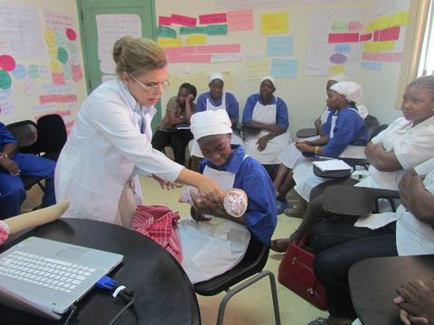
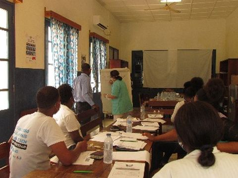
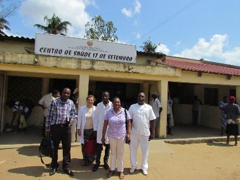
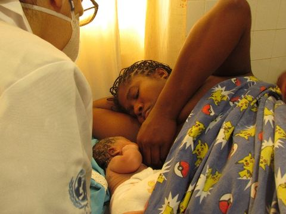
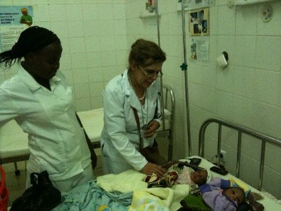
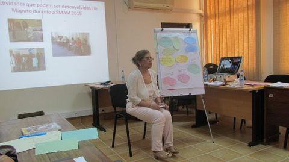
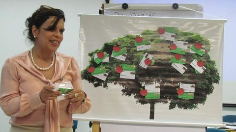
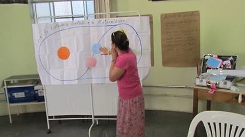
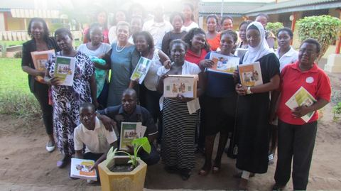

Décadas de experiência prática em saúde materna e infantil, no Brasil e em vários países de África.

MScIH (Reino Unido), BSc (Brasil), RN (Brasil/Reino Unido) — Consultora Internacional em RMNCAH+N
Regina Pereira da Silva é licenciada em Enfermagem e Obstetrícia pela Escola de Enfermagem da UFMG e é enfermeira registada no Reino Unido. Tem mestrado em Saúde Internacional pelo Institute of Global Health and Development da Queen Margaret University, em Edimburgo, na Escócia, com tese sobre políticas públicas, VIH, SIDA e aleitamento materno na África subsariana. Tem um diploma em saúde pública pela Glasgow University Medical School e formou-se em aleitamento materno no International Centre for Child Health, na University of London, em 1993. Há 38 anos que trabalha na área da saúde materna, neonatal e infantil, a nível internacional desde a década de 1990, e tem uma vasta obra publicada.
Nos últimos 10 anos trabalhou como consultora independente para agências internacionais na África Ocidental, Central e Austral, em programas de saúde e nutrição, especialmente na nova versão 2018/2020 do Baby-Friendly. Trabalhou de perto com grávidas, mães, pais, recém-nascidos, bebés, adolescentes e profissionais de saúde em hospitais e centros de saúde por toda a África, frequentemente em contextos de recursos limitados e elevado stress. Foi também consultora nacional junto do Ministério da Saúde do Brasil, facilitando workshops em dez estados brasileiros sobre apoio à amamentação no local de trabalho, e colaborou com ONG internacionais e com o programa BetterBirth do Ariadne Labs, na Harvard T.H. Chan School of Public Health.
E-mail: rds@mchfs.org
Mensagem de boas-vindas pendente — espaço reservado para a mensagem pessoal da Regina às profissionais que se juntam ao programa.



















Mentora
Biografia completa pendente — a ser fornecida pela equipa.
Perfis dos palestrantes convidados pendentes — esta secção listará os oradores à medida que forem confirmados.